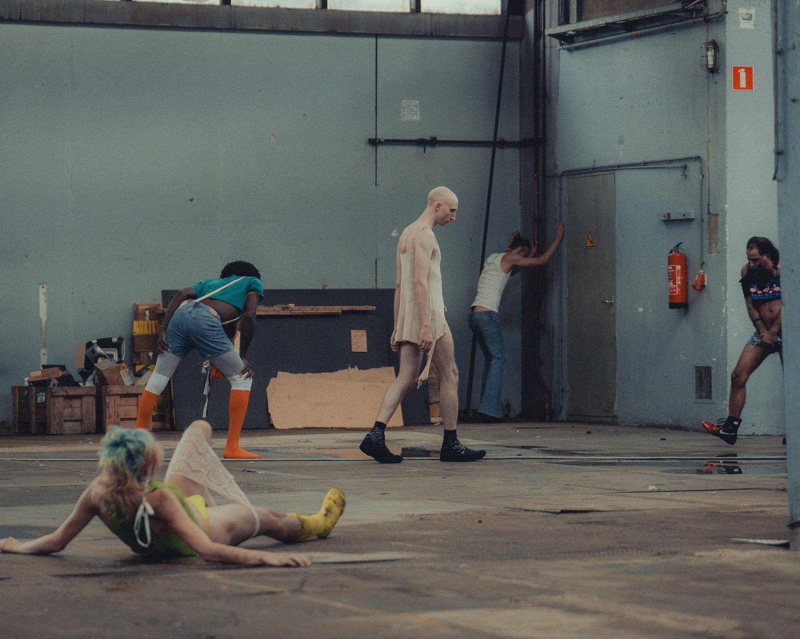
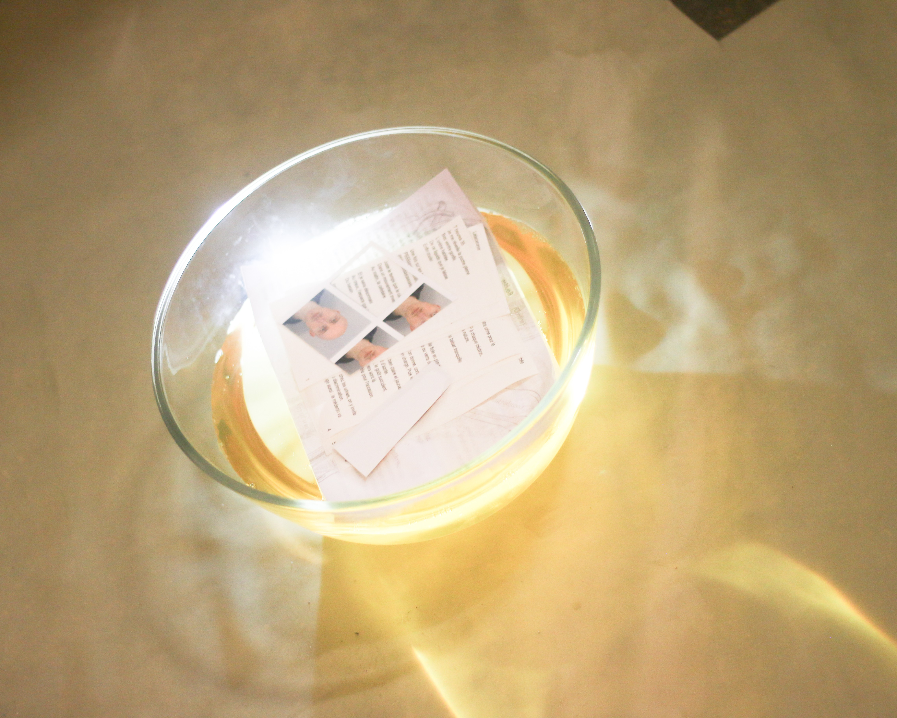
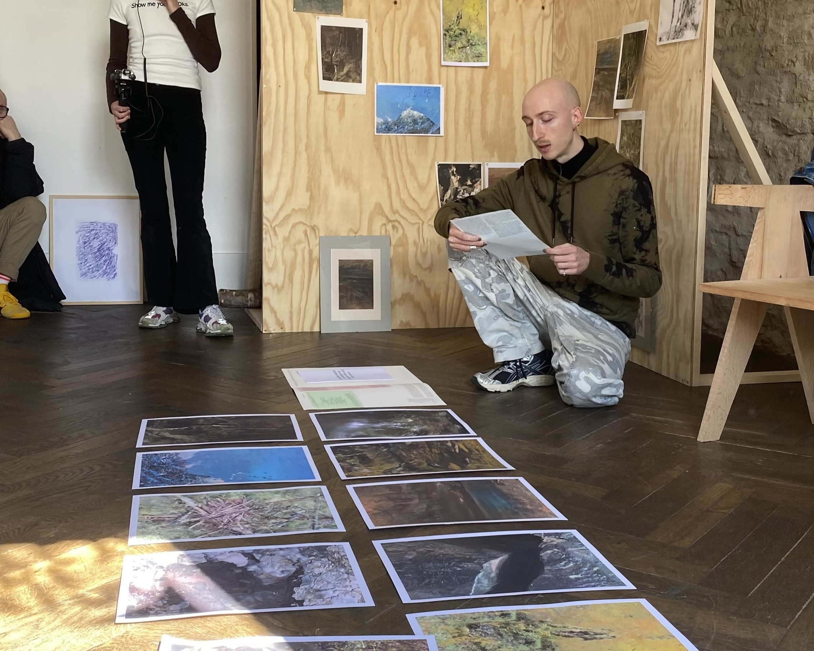
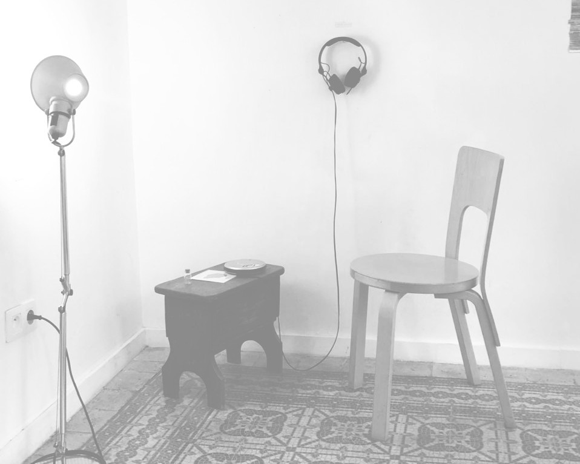
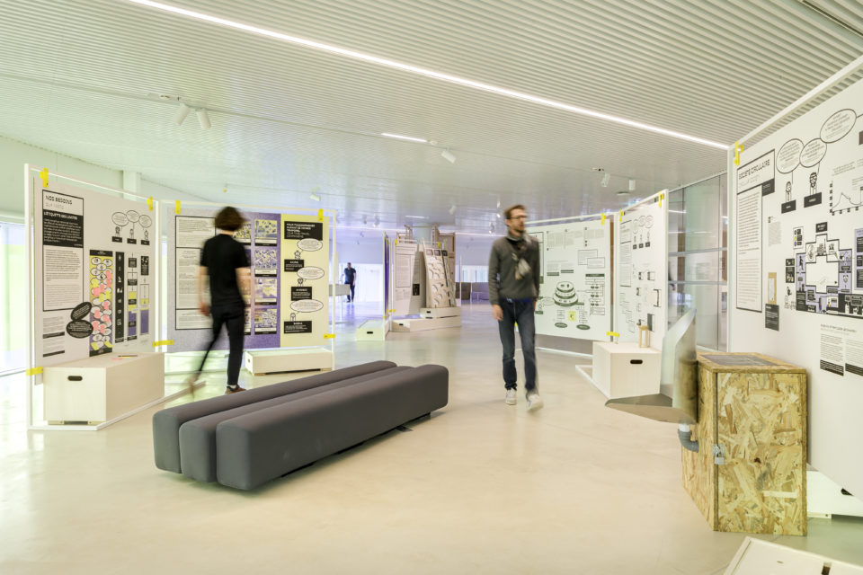
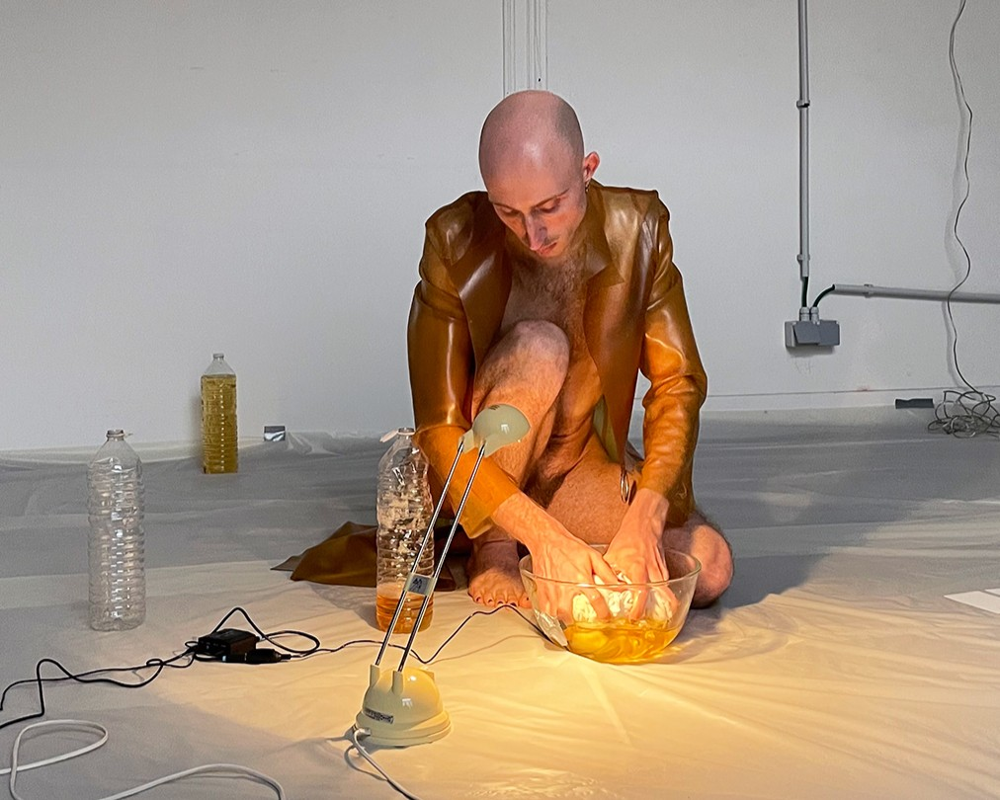

Val·entin
Aubois-Liogier
Artist & Researcher (Ph.D.)
Based in Paris
Coming from a design background (holding several master's degrees in Design),
Val·entin navigates across disiplines and media: performing, designing, writing short texts and poetry,
dancing and creating installations. Their work explores socioecological and sociosensory transformations
of inhabited spaces, engagin with the banal, liminal and abject. Knowing as a situated and embodied practice is at core.
Val did a practice-based doctoral research (defended in July 2026) which focuses on changes in perception and representation
in relation with new systems for recycling human urine in agriculture, with a focus on urine collection devices.
They also teach in design, art and urban planning at the university through courses, workshops and lectures.
✼ More informations ✼






